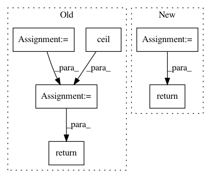

70b15bde1d8a1b29d24f23bac1a28a63be0fb4d2,torchsample/modules/super_module.py,SuperModule,evaluate_loader,#SuperModule#Any#,223
Before Change
return loss.data[0]
def evaluate_loader(self, loader):
nb_batches = int(math.ceil(len(loader.dataset.inputs)/loader.batch_size))
losses = torch.FloatTensor(nb_batches)
for batch_idx, (x_batch, y_batch) in enumerate(loader):
x_batch = Variable(x_batch)
y_batch = Variable(y_batch)
y_pred = self(x_batch)
loss = self._loss(y_pred, y_batch)
losses[batch_idx] = loss.data[0]
return torch.mean(losses)
def save(self, file):
Save a model to disk
After Change
def evaluate_loader(self, loader):
self.eval()
total_loss = 0.
total_samples = 0.
for batch_idx, (x_batch, y_batch) in enumerate(loader):
x_batch = Variable(x_batch)
y_batch = Variable(y_batch)
y_pred = self(x_batch)
loss = self._loss(y_pred, y_batch)
total_loss += loss.data[0]*len(x_batch)
total_samples += len(x_batch)
self.train()
return total_loss / total_samples
def evaluate_on_batch(self, x, y):
self.eval()
x = Variable(x)
In pattern: SUPERPATTERN
Frequency: 3
Non-data size: 6
Instances
Project Name: ncullen93/torchsample
Commit Name: 70b15bde1d8a1b29d24f23bac1a28a63be0fb4d2
Time: 2017-04-20
Author: ncullen@modv-vlan533.0018.apn.wlan.med.upenn.edu
File Name: torchsample/modules/super_module.py
Class Name: SuperModule
Method Name: evaluate_loader
Project Name: NifTK/NiftyNet
Commit Name: f0ac6351b5ee28846121158b7f0cd34a109bef9a
Time: 2017-07-22
Author: wenqi.li@ucl.ac.uk
File Name: niftynet/utilities/misc_io.py
Class Name:
Method Name: match_volume_shape_to_patch_definition
Project Name: nipy/dipy
Commit Name: c71890af93876a48374131b07ee324adef63844b
Time: 2010-04-13
Author: matthew.brett@gmail.com
File Name: dipy/io/dicomwrappers.py
Class Name: Wrapper
Method Name: image_position